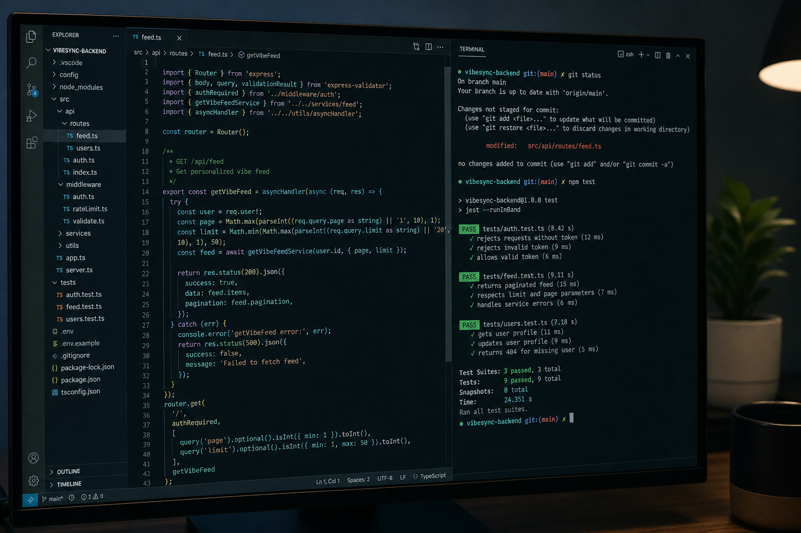

src / apiFind Your Vibe & enterprise web
Backend functionality and API integrations for mobile and web apps, including Find Your Vibe. Now leading architecture on enterprise web applications at Integral — scalability, code review, and turning messy requirements into software that ships.